Beauté Naturelle Africaine
Des guides experts de Dr Marie Nzuzi pour révéler l'éclat naturel de ta peau. Sans produits chimiques. Juste la nature.
Découvrir les guidesElles nous font confiance
Le programme complet pour retrouver un visage ferme, lumineux et rajeuni. Exercices faciaux, masques naturels et routine quotidienne de 10 minutes qui changent tout.
Découvre les méthodes naturelles pour transformer ta peau sans dépenser une fortune chez le dermatologue. Des remèdes ancestraux africains modernisés et validés.
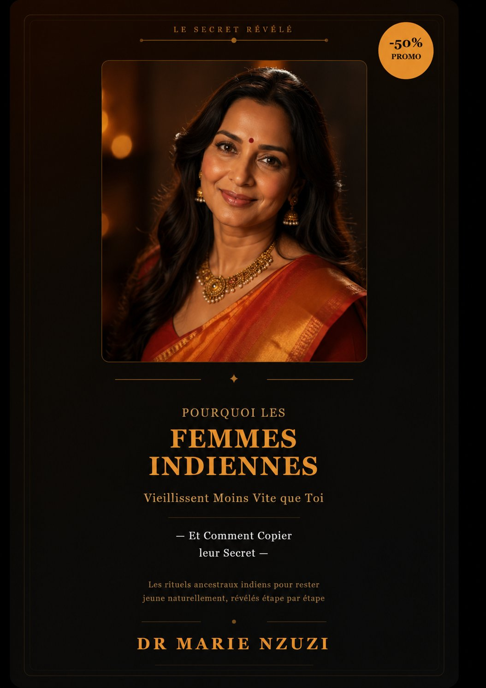
Les rituels millénaires des femmes indiennes enfin révélés. Curcuma, huile de coco, massage facial ayurvédique... Tout ce qu'elles font au quotidien et que tu peux reproduire chez toi.
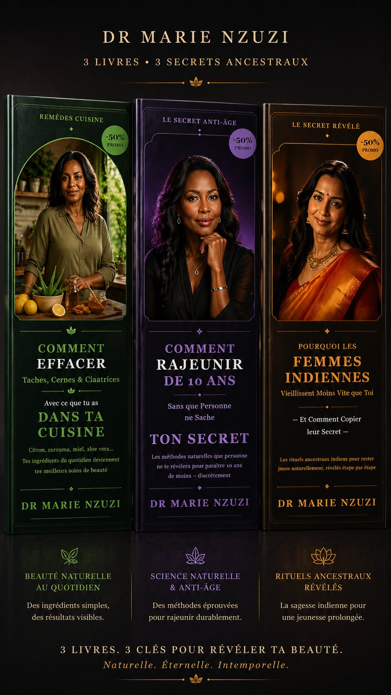
Les 3 guides réunis dans un coffret exclusif. Le système beauté complet pour transformer ta peau naturellement. Le meilleur rapport qualité-prix.
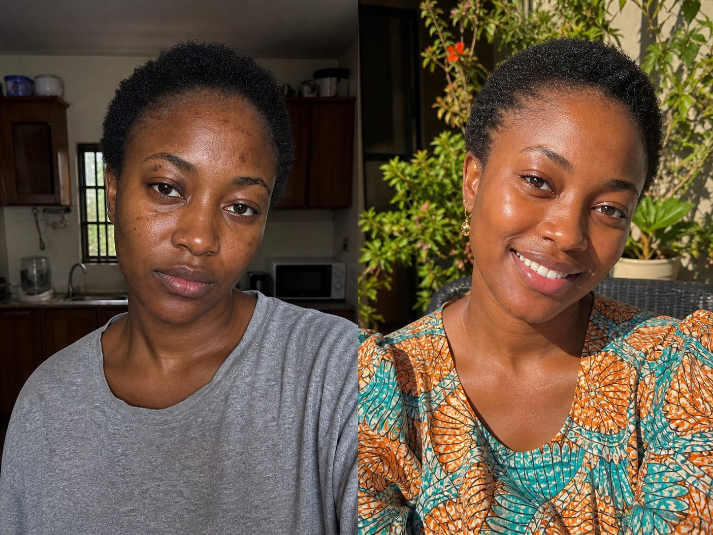
Awa, 34 ans
4 semaines — Guide 1
« Teint plus lumineux, traits du visage raffermis »
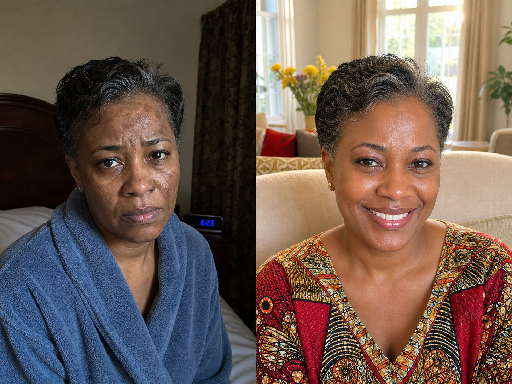
Fatou, 52 ans
6 semaines — Guide 2
« Taches brunes estompées, peau plus uniforme »
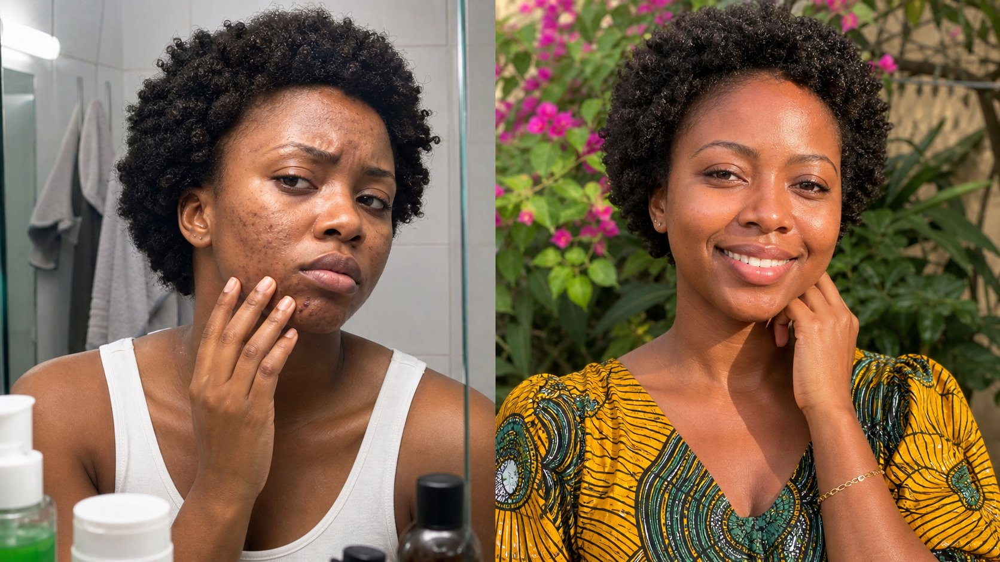
Amina, 28 ans
3 semaines — Guide 3
« Peau éclatante grâce aux rituels indiens adaptés »
Mariame, 45 ans
8 semaines — Guide 1
« Rides atténuées, ovale du visage redessiné »
Je suis médecin, passionnée par la beauté naturelle et le bien-être des femmes africaines. Mais avant d'être celle qui t'accompagne aujourd'hui, j'ai été celle qui cherchait désespérément des réponses.
Comme beaucoup de femmes, j'ai grandi avec les crèmes éclaircissantes qu'on trouvait partout. Des produits qui promettaient une peau parfaite mais qui la détruisaient silencieusement. J'ai vu les dégâts sur ma peau, sur celle de ma mère, de mes sœurs, de mes amies.
Quand je suis devenue médecin, j'ai compris la science derrière ces dégâts. Et j'ai décidé qu'il était temps de proposer autre chose. Quelque chose de vrai. De naturel. De respectueux de notre peau africaine.
J'accompagne les femmes africaines à prendre soin de leur peau avec des méthodes naturelles, accessibles et efficaces. Le beurre de karité, le moringa, le bissap, le baobab — nos ancêtres connaissaient déjà ces trésors. Moi, je les ai étudiés avec un regard médical pour te donner des protocoles simples qui marchent vraiment.
NZUZU GLOW UP, c'est ma façon de mettre cette connaissance entre tes mains. Pas de crèmes hors de prix. Pas de produits chimiques. Juste toi, la nature, et 10 minutes par jour.
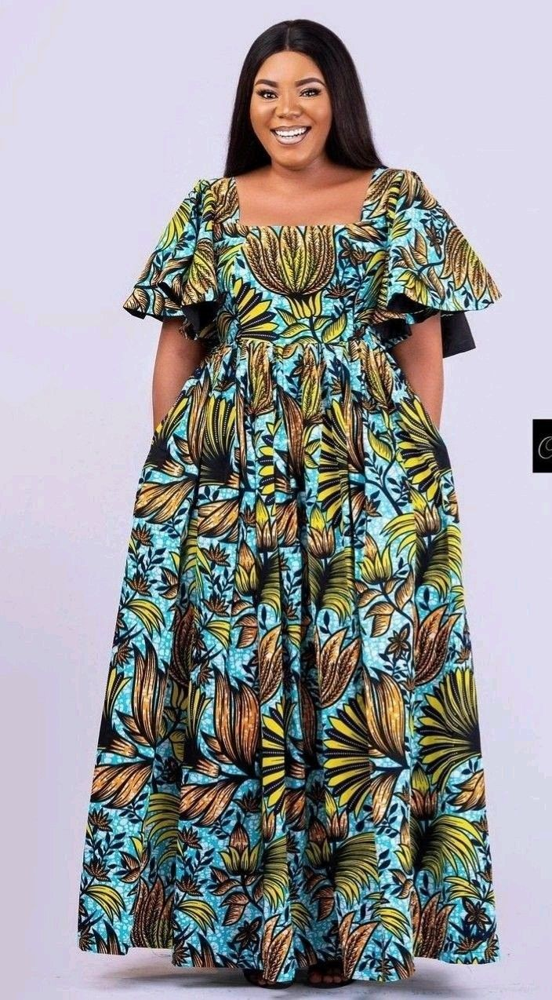
+10 ans de pratique médicale
+3000 transformations
Le beurre de karité
Ta peau est parfaite, nourris-la.
« En 3 semaines, ma peau a complètement changé. Mon mari m'a demandé quel était mon secret. Je lui ai dit : du karité et les conseils de Dr Nzuzi. C'est tout. »
★★★★★
Aminata, 38 ans
Guide 01★★★★★
« J'ai arrêté les crèmes chimiques il y a 2 mois grâce à ce guide. Ma peau respire enfin. Les taches que j'avais depuis des années commencent à s'estomper. »
Fatoumata, 47 ans
Guide 02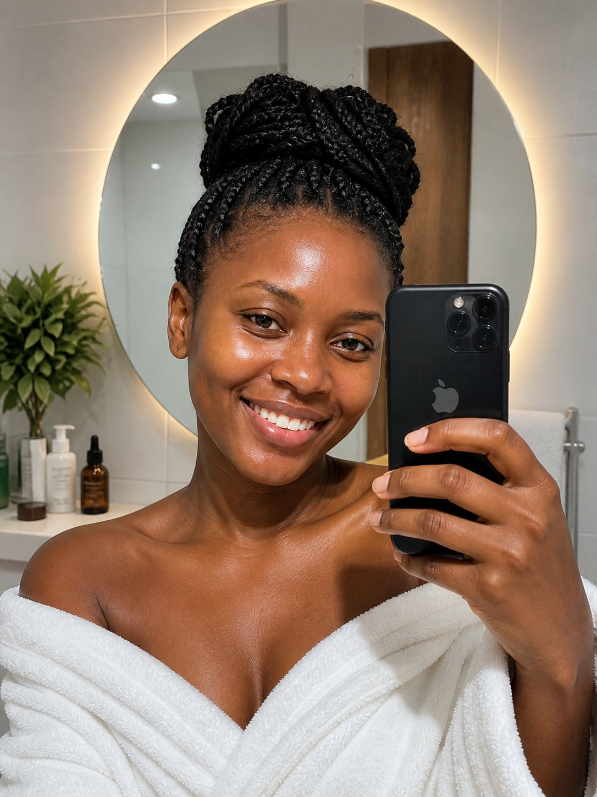
★★★★★
« Les secrets indiens adaptés à notre peau africaine, c'est exactement ce qu'il me fallait ! Le masque au curcuma est devenu mon rituel du dimanche. »
Aïssatou, 29 ans
Guide 03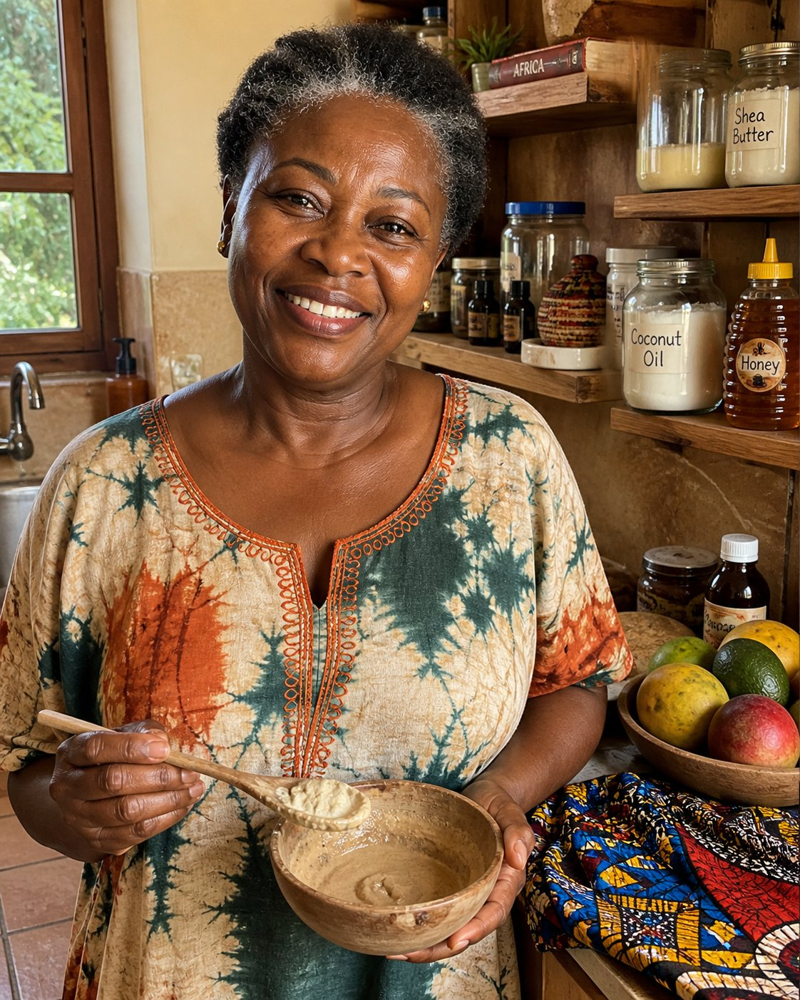
★★★★★
« À 55 ans, je pensais que c'était trop tard. Les exercices faciaux m'ont prouvé le contraire. Mon visage est plus ferme, mon cou aussi. Mes filles sont jalouses ! »
Bintou, 55 ans
Guide 01★★★★★
« Les remèdes naturels de Dr Nzuzi sont incroyables. J'utilisais des produits à l'hydroquinone depuis 5 ans. Aujourd'hui ma peau se régénère naturellement. »
Djénéba, 33 ans
Guide 02★★★★★
« Le chapitre sur les femmes indiennes m'a ouvert les yeux. L'huile de coco + curcuma + massage facial, c'est magique. En 4 semaines, tout le monde me demande ce que j'utilise. »
Mariam, 42 ans
Guide 03★★★★★
« J'ai acheté les 3 guides. Le meilleur investissement beauté de ma vie. Moins de 40€ pour des résultats que des crèmes à 100€ ne m'ont jamais donnés. »
Kadiatou, 51 ans
Guide 01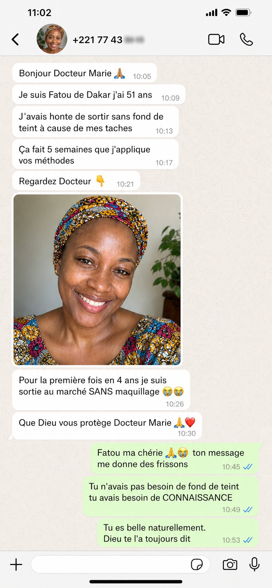
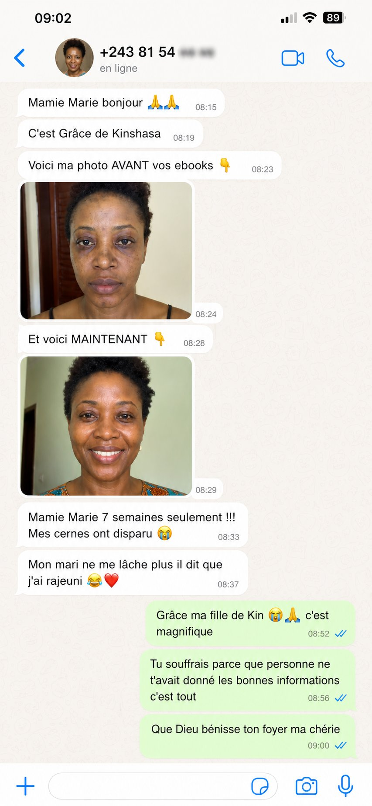
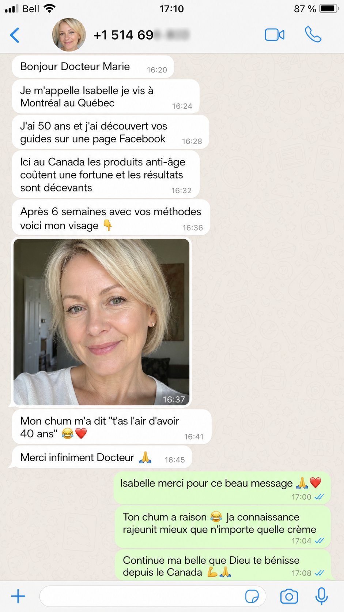
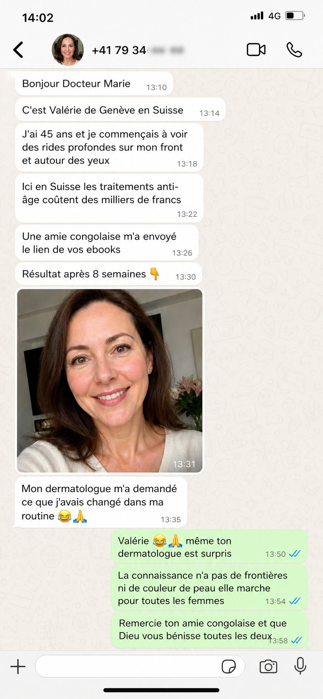
✨ Le Coffret Secret Glow Up — 3 Guides en 1 : 24,99€ — Économise 34%
Je veux le coffretTu as 30 jours pour tester nos guides. Si tu n'es pas satisfaite, on te rembourse. Aucune question. Aucune condition. Tu n'as rien à perdre.
Oui. Nos méthodes combinent des remèdes naturels ancestraux africains et asiatiques avec des connaissances médicales modernes. Les exercices faciaux sont basés sur une étude scientifique de l'Université Northwestern. Des milliers de femmes ont obtenu des résultats visibles en quelques semaines.
Les premiers résultats (peau plus douce, teint plus lumineux) apparaissent en 2 à 3 semaines. Les transformations plus profondes (rides atténuées, taches estompées) prennent 4 à 8 semaines de pratique régulière.
Absolument. Contrairement à beaucoup de guides créés pour les peaux caucasiennes, nos programmes sont conçus spécifiquement pour les peaux noires et métissées, avec des ingrédients que nos ancêtres utilisaient déjà : karité, moringa, bissap, baobab.
Oui ! Tous les ingrédients sont disponibles au marché local ou en boutique : beurre de karité, curcuma, miel, citron, huile de coco, aloe vera, banane, avocat... Rien d'exotique ou de cher.
Immédiatement après ton paiement, tu reçois un email avec ton lien de téléchargement. Tu peux lire ton guide sur téléphone, tablette ou ordinateur.
Oui, tu bénéficies de notre garantie 30 jours. Si tu n'es pas satisfaite, écris-nous et on te rembourse intégralement.
Le Guide 01 est un programme anti-âge complet (exercices + masques + routine). Le Guide 02 se concentre sur l'effacement des taches, cernes et cicatrices avec des ingrédients de ta cuisine. Le Guide 03 révèle les secrets ancestraux indiens adaptés à notre peau africaine. Le Coffret Secret Glow Up réunit les 3 guides à prix réduit pour un système beauté complet.
Rejoins les milliers de femmes qui ont transformé leur peau naturellement.
Découvrir les guides